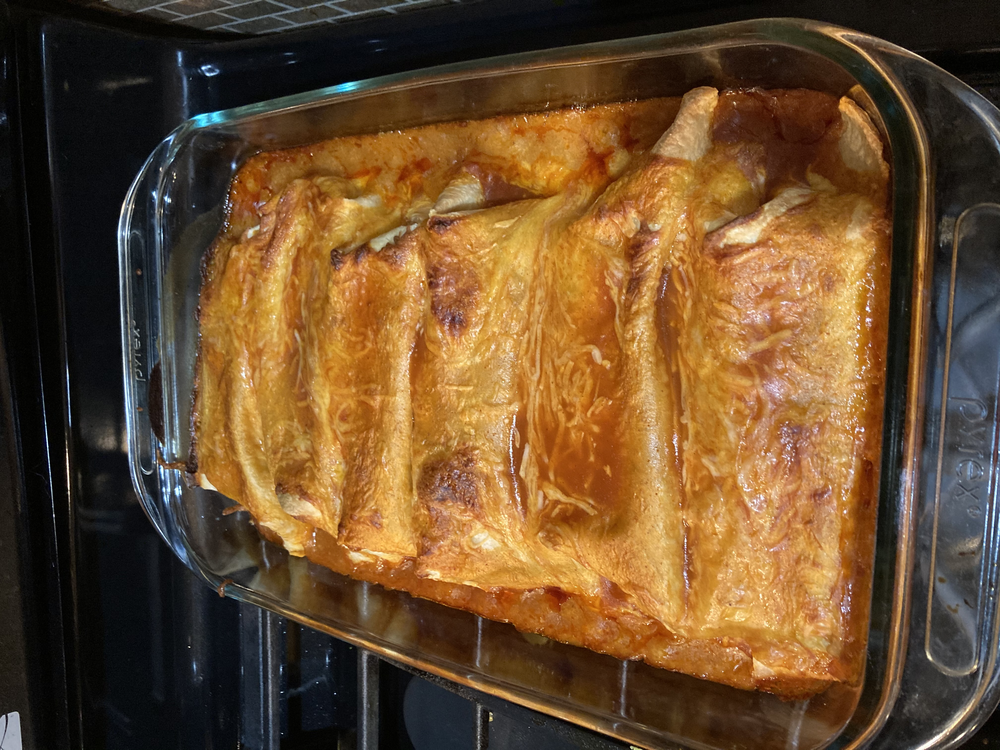

Easy Veggie Enchilada's for College Students
Ingredients
Enchilada Filling:
- 1 can black beans
- 1 can pinto beans
- 1/2 yellow onion
- 1 fresh tomato
- 1 cup sliced and quartered zucchini
- 1 1/2 cups taco cheese mix
- fills up to 12 burrito size tortillas
External Ingredients:
- 2 cans Old El Paso RED Enchilada Sauce
- 2 cups taco cheese mix
- 13x9-inch pan
- Cooking spray or butter for pan grease
Directions
- Preheat your oven to 375o F.
Enchilada Filling
- In a large bowl, combine chopped onion, quartered zucchini,
and tomato.
- Rinse both cans of beans in a colander before adding them to the
bowl with the rest of the ingredients.
- Finally, add cheese to the bowl and mix together.
- Grease pan
- Grab a tortilla and add a scoop of filling, fold edges together
and role tortilla into burrito. Place in pan. Repeat until filled.
- Once pan is full, pour sauce over top until santurated.
- Cover enchiladas with cheese.
- Place on middle oven rack.
- Bake for 20-25 min.
- Take out and let sit for 5-10 min
View Inspiration Recipe Online
Contact Me
Send me an email!
University of Montana
32 Campus Drive
Missoula, MT 59812